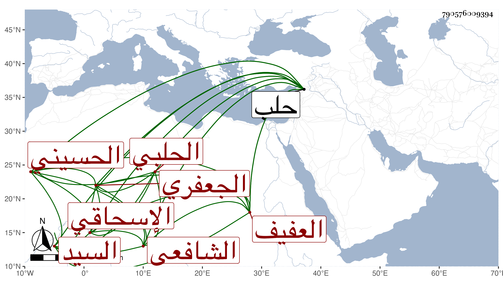

0902Sakhawi.DawLamic.ITO20230111-ara1.EIS1600.790576009394
Biography ID: 790576009394
164
عبد الله بن محمد بن أحمد بن أحمد بن محمد بن أحمد بن علي بن محمد ابن علي بن محمد بن عبد الله السيد العفيف نقيب الإشراف بن البدر بن العز أبي جعفر بن الشهاب بن أبي المجد بن أبي العباس بن أبي الحسن بن أبي المجد الحسيني الإسحاقي الجعفري الحلبي الشافعي . ولد في ربيع الآخر سنة عشر وثمانمائة بحلب ونشأ بها فقرأ القرآن على الشهاب الساعي وغيره وحفظ المنهاج الفرعي وحضر دروس البدر بن سلامة في العربية بل قرأ عليه البخاري وأجازت له عائشة ابنة ابن عبد الهادي والشهاب بن حجي ، وولي نقابة الأشراف بعد أبيه كأسلافه وكان من بيت علم وفضل ودين له شرف من جهة أبويه ، لقيته بمنزله بحلب وهو مفلوج فأنشدني قوله :
| يا رسول الله إني لأرجو | أن تكفل يوم عرضي |
| بإدخالي الجنان بلا حساب | إذا كنت النوافل لي وفرضي |
| وها أنت المؤمل للبرايا | فحقا بعضنا أولى ببعض |
قيل ولو قال :
| عبيدك يا رسول الله يرجو | شفاعتك العميمة يوم عرض |
لكان أحسن فإن ما قاله من بحر الوافر مع اختلاله في الوزن وقد سبق الناظم جده كما في ترجمته لنحوه . مات بعد ستين .
